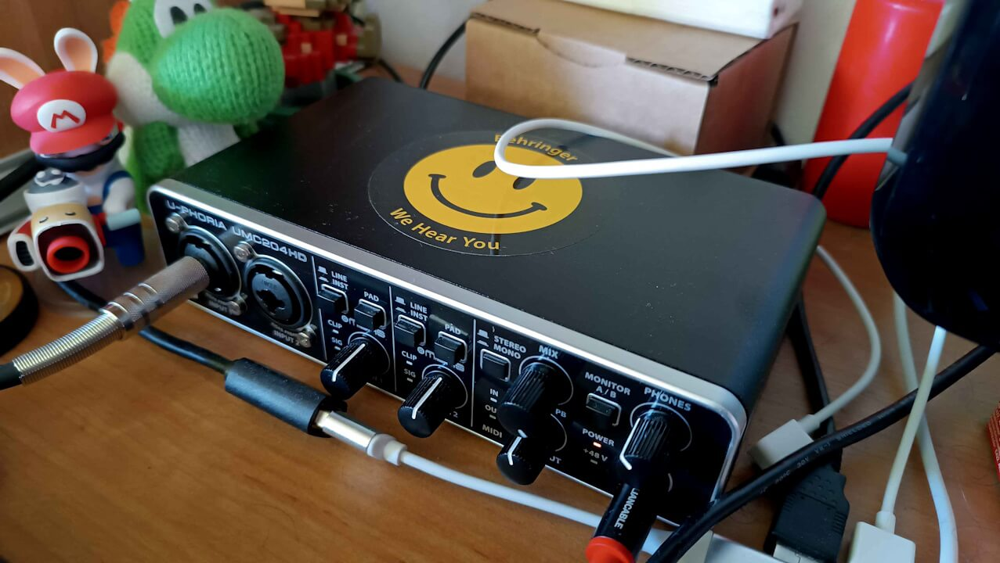
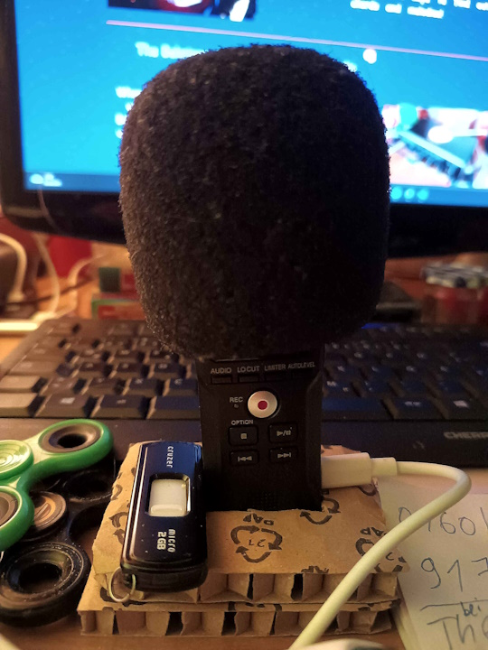
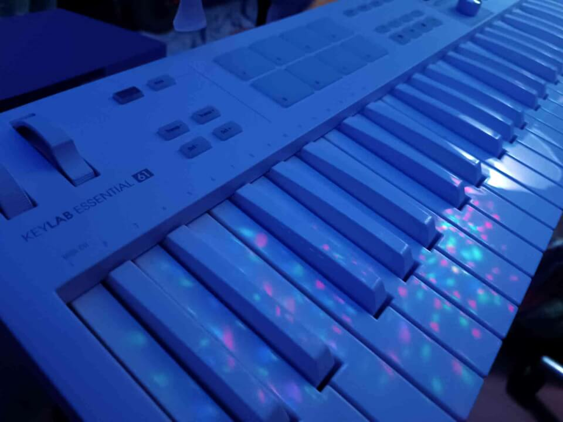
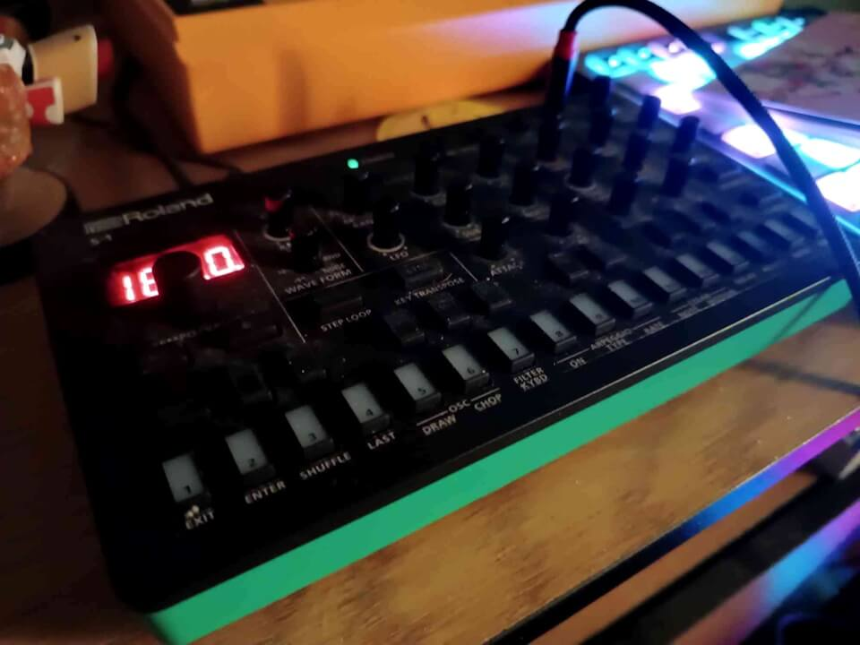

My Music Gear!
So you wanna know how to make music like the pros, huh, kiddo?
The Behringer TD-3
Girl, don't even TALK TO ME if you don't have a 303 at home! This thing belongs in every good EDM household!
(jokes aside, this thing probably just started my expensive obsession with synthesizers)
This thing is SO yellow irl! Here's a video of me covering a Gesaffelstein track with it!
The Akai MPK Mini 3!
Ah yes, the 2 octave midi keyboard! When I first bought it, I thought I was barely going to use it but especially when being on a laptop without it, I noticed how much of a godsend it is to be able to just use actual keyboard keys to find out notes, chords and melodies!
The Behringer U-Phoria UMC204HD Audio Interface
When I got the TD-3 and saw that this sticker was included, I just HAD to stick it on the Behringer Logo! This is a pretty neat interface, I use it to record my synth input. It feels pretty rad using a 1/4cm cable just to plug in my headphones haha!

The Zoom H1n Microphone

This thing was probably NOT intended for the purposes I used it for,
but you know what? I love it either way!
My friends got together and gave me this mic for my 16th birthday,
ever since I have used it up until now!
Thank you friends <3
The Setup to get this thing standing straight is incredibly scuffed, and I kind of love that haha!
At first my friend made me a stand out of foam but after like three years, the foam got soft
so I made a similar stand out of cardboard now
(as seen in the picture)
The Arturia Keylab Essential 61 MK3
Bright gear is underrated! Everything is so dark and black and depressing, so this keyboard adds a lot of needed happy brightness to my room ^^
Also got a nice sustain pedal and I like to jam on this keyboard! I'm not that well of a player but it's very fun to play on this!

The Roland S-1

At first I know what you think: a DIGITAL synthesizer?
But the S-1 is actually more than a digital recreation of Roland's iconic S-101 synthesizer!
It has some fun features like motion control!
Yes you can map parameters to motion control and use it like a Wii Remote!
Is motion control useful? Idfk.
Is it FUN? HELL YEAH IT IS!
That is basically the entire thing I use gear for. Yes I could just stick to midi controllers and do the rest in my DAW but physical synthesizers are fun to use for me!
...isn't it refreshing to see an equipment blog post without trying to sell you something, or spamming affiliate links all over?
It's nice here! Take a break and smell the flowers: